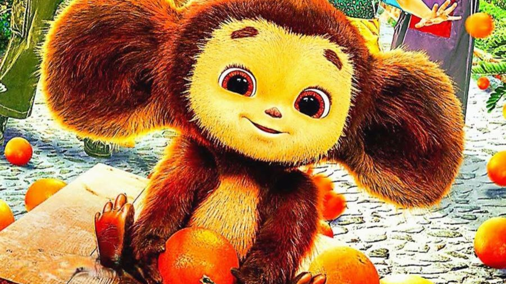

никита

Hello! My name is Nikita, I am 12 years old. I want to tell you about my favourite pet.
I have a cat. My cat’s name is Murzik and he is 5 years old. My parents gave me a kitten when I went to the first class. The kitten was small, because of this he was afraid and meowed loudly. I cuddled him and put him on my lap. Then he was purring, that’s why I named him Murzik.
At present Murzik is a big, fluffy and beautiful cat. Usually he eats in the kitchen, walks around the flat or sleeps on my bed. He doesn’t go outside; he is a house cat. On the evenings I play with my cat, pet and cuddle him. When I am at home, Murzik is always near me. He is my best friend and I love him very much.
человек без головы
я отрываю себе голову. я дурак?
чебурашка

Я был когда-то странной игрушкой безымянной
К которой в магазине никто не подойдет!
Теперь я Чебурашка мне каждая дворняжка
При встрече сразу лапу подает!
Теперь я Чебурашка мне каждая дворняжка
При встрече сразу лапу подает!
Мне не везло сначала и даже так бывало
Ко мне на день рожденья никто не приходил
Теперь я вместе с Геной он необыкновенный
Он самый лучший в мире крокодил!
Я был когда-то странной игрушкой безымянной
К которой в магазине никто не подойдет
Теперь я Чебурашка мне каждая дворняжка
При встрече сразу лапу подает!
Теперь я Чебурашка мне каждая дворняжка
При встрече сразу лапу подает
Слова: Успенский Э..